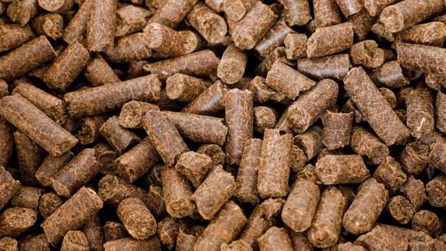

Nossos Produtos

Ração peletizada para bovinos
É um alimento processado em pequenos pellets, oferecendo uma forma prática e uniforme de nutrição. Reduz desperdícios e promove uma alimentação balanceada para o desenvolvimento saudável e eficiente do rebanho.

Ração peletizada para suínos
É um alimento processado em pequenos pellets, oferecendo uma forma prática e uniforme de nutrição. Reduz desperdícios e promove uma alimentação balanceada para o desenvolvimento saudável e eficiente do rebanho.
Ração farelada para bovinos
É um tipo de alimento composto por ingredientes triturados e moídos em partículas menores, formando uma mistura granulada. Em forma de farelo facilita o consumo pelos animais e é uma boa opção em diferentes sistemas de alimentação.

Milho
Sementes cuidadosamente selecionadas para garantir características específicas, como resistência a pragas, adaptação a diferentes condições climáticas e alto potencial de rendimento.
Milho
Sementes cuidadosamente selecionadas para garantir características específicas, como resistência a pragas, adaptação a diferentes condições climáticas e alto potencial de rendimento.
Milho
Sementes cuidadosamente selecionadas para garantir características específicas, como resistência a pragas, adaptação a diferentes condições climáticas e alto potencial de rendimento.